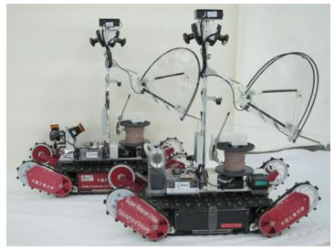
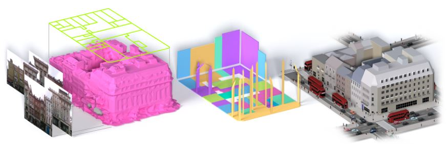
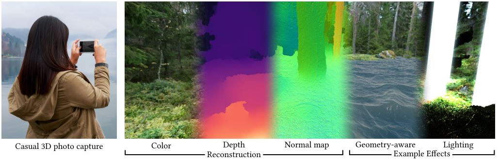
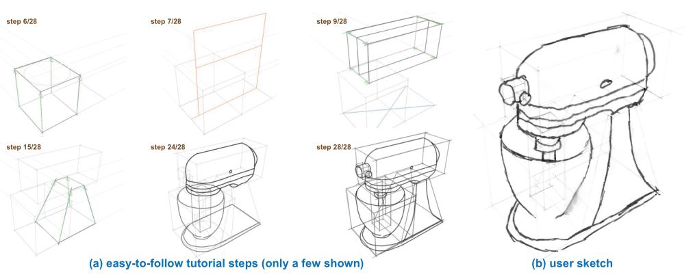
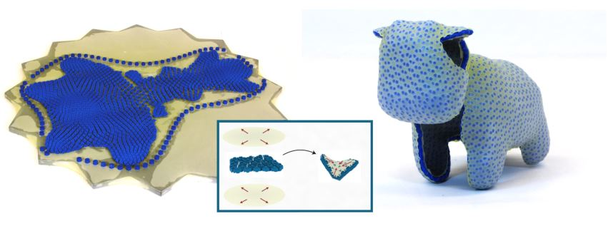
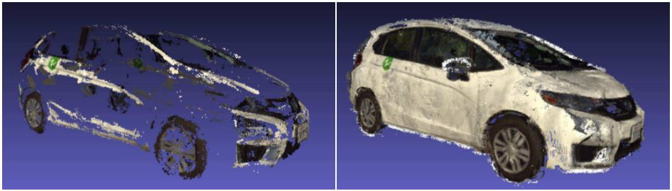

Improvements to the Rescue Robot Quince Toward Future Indoor Surveillance Missions in the Fukushima Daiichi Nuclear Power Plant
Tomoaki Yoshida, Keiji Nagatani, Satoshi Tadokoro, Takeshi Nishimura and Eiji Koyanagi

On the third floor of the Fukushima Daiichi Nuclear Power Plant Unit 2 sits a tracked-wheel robot named Quince, permanently disconnected from humanity due to an accidental severing of the communication cable upon returning home. Even if any battery were left, its electronics have long since exceeded radiation exposure limits and are unlikely to work. Over six missions, a team of operators remote controlled Quince and used the robot's unique capabilities to climb stairs, open doors, measure water spill and radiation levels.
I don't think I've ever been as excited while reading a research paper - it's like a sci-fi story! Not one of those gloomy, dystopian sci-fi's that everyone seems to be writing today. This is a genuine success story, showing the benefit that robotics can actually bring (and has brought) to society. This work got some coverage on news sites, and one of the operators kept a personal blog that vanished for mysterious reasons...
Past, Present, and Future of Simultaneous Localization And Mapping: Towards the Robust-Perception Age
Cesar Cadena, Luca Carlone, Henry Carrillo, Yasir Latif, Davide Scaramuzza, José Neira, Ian Reid, John J. Leonard
I discovered this article while struggling to find a topic (any topic!) for my master thesis, and it's thanks to a single sentence in it that I went in the direction I did. Upon reading that sentence, a connection formed in my head between a five year old hobby project and the SLAM problem, and this allowed me to come up with an approach angle that differentiated me in the pile of super-smart researchers already in this area.
Philip Guo has vlogged about this: discovering intersections between your personal strengths and experiences, and your research domain, is important, because otherwise you are competing against people with similar experiences, having similar ideas and doing similar projects, and you will have a hard time differentiating. It also makes me think of learnbbaticals: learning topics just for the fun of learning, without expecting it to pay dividends later on.
Having read more surveys since then I have come to appreciate how well-written this is: it's a helpful summary of the state of SLAM, but instead of being paragraphs of "X et al. did such and such" organized into sections (which is more like a dishonest bibliography) the authors synthesize the pieces of information together, point out the core ideas connecting papers, and draw conclusions regarding limitations and opportunities: it's not just a collection of knowledge, but a knowledge accelerator.
BigSUR: Large-scale Structured Urban Reconstruction
Tom Kelly, John Femiani, Peter Wonka, Niloy J. Mitra

I became aware of this paper at the 3DV 2017 conference. What I got from this was the idea of aiming for stylization over realism: the goal of 3D scanning (and photogrammetry and stuff) is to capture reality as close as possible. But because technology is imperfect, the result has holes (because of reflections or noise) or weird bubbly surfaces (because of over-smoothing), so they're not very compelling to look at. What this paper does is it uses the 3D scan as input to generate a stylized model based on high-level rules (like flat walls, windows, doors, and so on).
Sure, it misses some details that weren't in the ruleset, but you get a hole-free and nice-looking model out. Not only that, but you also get semantic labels like, this is a window or this is a door, instead of just a gigantic 3D mesh. Naturally, this falls right into the keenest interests of our Face/Goo/Soft overlords, but you can imagine (for example) architect companies using this for good too.
Casual 3D Photography
Peter Hedman, Suhib Alsisan, Richard Szeliski, Johannes Kopf

There's been a lot of impressive progress in the area of SLAM and 3D scanning, with stuff like DSO, SVO, ORB-SLAM, maplab and BundleFusion, but these all fall short when it comes to creating 3D models that just look good. So these four authors (three of which are at Facebook) decided to do a bang solid job of 3D scanning, prioritizing good-looking and plausible models, rather than necessarily an unbiased depiction of real life.
This ties into the whole stylization versus realism idea from the above paper, and there are more papers that go the same route (like this one) and try to apply high-level rules to visually improve the result of 3D scanning.
How2Sketch: Generating Easy-To-Follow Tutorials for Sketching 3D Objects
James W. Hennessey, Han Liu, Holger Winnemöller, Mira Dontcheva, Niloy J. Mitra

The papers above led me to discover yet more awesome papers from University College London's Smart Geometry Processing Group and Adobe Research. This one in particular struck my fancy as, having done a few years of learning to draw myself (and not being particularly successful), the idea of combining computing with an analog hobby was eye-opening, and kept me awake thinking about ways to use machine learning, computer vision and computer graphics techniques, for learning to draw: like accelerating the creative process by interactively generating designs, teaching you perspective.
CurveUps: Shaping Objects from Flat Plates with Tension-Actuated Curvature
Ruslan Guseinov, Eder Miguel, and Bernd Bickel

In a similar vein to applying computational power to drawing, I enjoyed discovering that people are using computing to rethink physical fabrication as well: making machine-knitting accessible to everyone, and helping us design joinery furniture (assembled solely by interlocking joints). This paper was particularly cute because I love the idea of printing a flat sheet of stuff and having it automatically morph itself into a 3D shape.
Polarimetric Multi-View Stereo
Zhaopeng Cui, Jinwei Gu, Boxin Shi, Ping Tan, Jan Kautz

This one has no particular ties with the other papers here, but I liked it because it made me think differently about sensors and algorithms for doing computer vision. It turns out that the polarization of light can tell us something about the orientation of the surface it came from, which is super useful in 3D reconstruction for resolving ambiguities.
This was information that was readily available to us from nature, that we could easily capture if we built our cameras to do so, but we were throwing it away because we thought it wasn't useful. It makes me wonder what else we are throwing away that could make our problems easier to solve, our algorithms more robust or efficient.
It's easy to take the sensors we already have - like RGB cameras, depth cameras and laser scanners - and think that's all we have got to work with, that this is all that nature is giving us to solve our problem. But maybe there are other physical phenomenon we can exploit, other weird properties of light, or radio waves, or quantom effects - who knows - that would drastically simplify the problem, if we build sensors to measure them.
Simen Haugo © 2017
BY-NC-SA 4.0